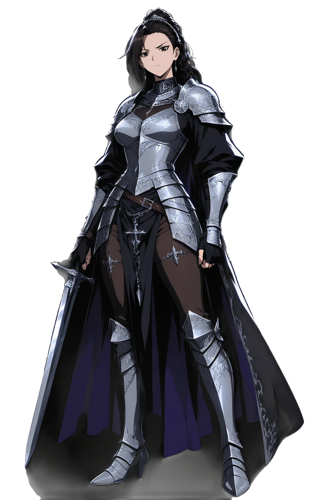
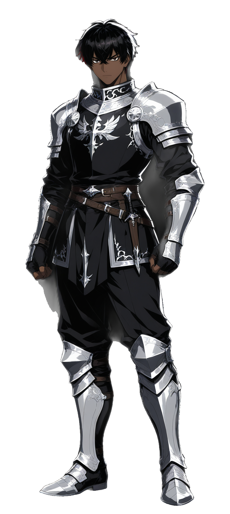
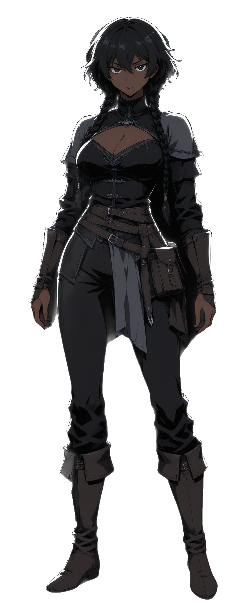

Move the pointer across a card. The framed art tilts and its layers separate;
the name and stars below stay flat, so the card reads as a page with a window
cut into it rather than a slab being skewed. Max deflection is 6° and
layer travel is 6px — deliberately restrained. The styles below the
divider are sliced straight out of src/index.css at build time,
so this is the shipping effect and not an approximation. Turn on your OS
“reduce motion” setting and it all goes flat.


